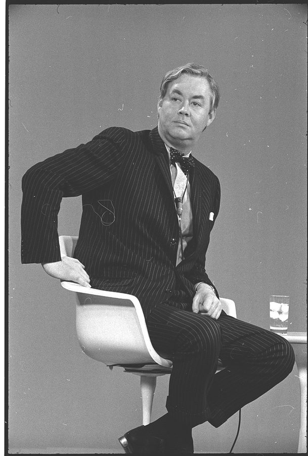
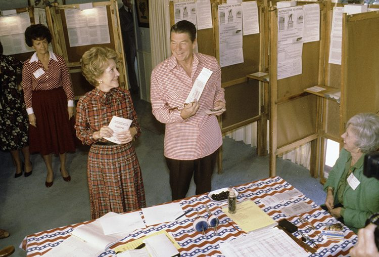
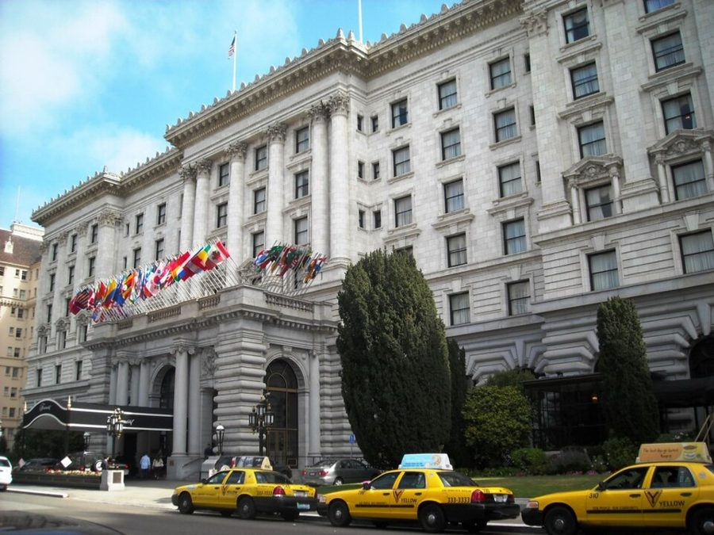
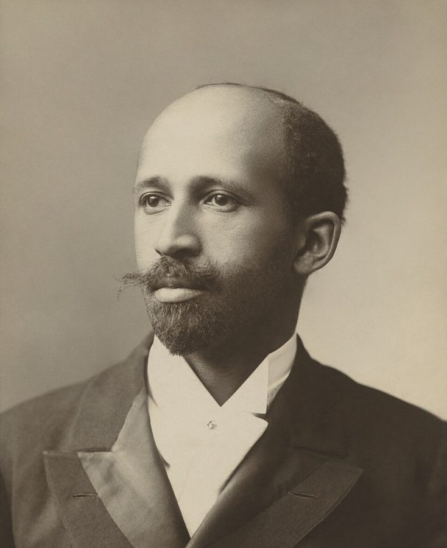

这一页在做什么
四十九到五十岁。Knowledge and Decisions 出版，胡佛研究所给了他一个不用教课的位子；里根当选以后，他成了记者追着问的人。这一页十一件东西：四封是别人写来的，两篇是整篇附上的报纸专栏。
抓两条线：一本书怎么换来一个位子；一次会、两篇专栏、一个没办成的组织，怎么在三个月里把他累倒。
1980.1 1980.7 1981.1 1981.4
那本书出版
里根当选 Fairmont 会议 第二次会取消 写来的信 他写的信 专栏
本站示意图。圆点按信上的日期画，方块是 1981 年 2 月见报的两篇专栏，具体哪两天书里没说。1980 年那一头是贺信和聘书，1981 年那一头全挤在三个月里。
斯坦福大学校园里的胡佛塔，摄于 2012 年。1980 年 2 月的那封聘书请他到这里做 Senior Fellow，此后的信大多从这里寄出。King of Hearts，CC BY-SA 3.0，维基共享资源
这个十年的开头只有两段串场文字，直接就进了第一封信。真正长的串场在后面：会议前有一段，专栏后面有三段。那几段把 1981 年头三个月的来龙去脉讲全了，口气是 2007 年的。
收信人和提到的人
这一页的人分三拨：1980 年初来道贺、来下聘书的；1980 年底一起办会的；1981 年专栏里被点名的。前两拨在这里，第三拨在「背景」里。
Jim Buchanan James Buchanan · 经济学家 · 写来的 串场文字说他是当时最有分量的经济学家之一，后来得了诺贝尔奖。他收到赠书后回了一封短信，是这一页的第一封。
Pat Daniel Patrick Moynihan · 联邦参议员 · 写来的 落款只有一个 Pat，身份要从信前那句串场里找。四行字，半是恭维半是自嘲。Odyssey 第 8 章提过他。
Glenn Glenn Campbell · 胡佛研究所所长 · 写来的 Milton Friedman 把那本书推荐给了他。信只有一句话，是聘书：把电话里谈定的事落到纸上。
Professor Levine 书里只给了姓 一位在别的问题上和他看法不同的教授，来信谈办择优录取的中学。他借回信说了一个更大的想法：主张为什么会被接受。
Bernard Bernard Anderson · Wharton 商学院 · 老朋友 60 年代末劝他留在学界的那位。这次临时飞到旧金山参加会议，在台上和 Walter 争了一场。这封是会后的谢信。
Mr. ****** 名字被隐去 · 陌生读者 来信鼓励他，劝他进政府做事。他回信谢绝，理由借的是 Friedman 的例子。
Meg Meg Greenfield · 《华盛顿邮报》的编辑 她请他给报纸写隔周一篇的专栏，还寄来华盛顿学校的剪报。这一页有一封回信，辞掉专栏的那封在下一页。
Bob Kilpatrick 康奈尔时的同事 · 写来的 专栏见报后来了一封短信，书里只印了一句，是玩笑。
Colleagues and Friends 一封群发的信 各地帮着筹备第二次会议和那个组织的人。会取消了，报上的说法又走了样，他写这封信交代经过。
Walter Walter Williams · 经济学家 · 只被提到 70 年代的页里已经是收信人。这里出现三次：会上和 Bernard 争论的人，专栏里那顿晚饭的客人，和他一起挨骂的人。
Hal 化名 · 只在专栏里出现 第二篇专栏里的黑人社会学家，晚饭的另一位客人。专栏明说这不是真名。
Mary 他 1981 年娶的妻子 · 不是收信人 串场文字说两人 1976 年在 Center for Advanced Study 认识。这一页只有一段话提到她。
四封来信怎么认。 称呼是 Dear Tom 的四封都是别人写给他的，要看落款才知道是谁：Jim Buchanan、Pat、Glenn，还有一封落款没印，靠信前的串场知道是 Bob Kilpatrick。他自己写的信，称呼是对方的名字。
这个 Mary 是第三个。 不是姐姐 Mary Frances，也不是 60 年代那位研究生。另外，第二篇专栏里有两个人只说了履历、没给名字（一位办开放招生的，一位后来当了陆军部长的），本站不补。
信件地图
一条是一封信。斜体字是那封信正文开头的几个词，照这一版屏幕上的字抄的，在 Kindle 里搜它就能跳过去。编号是黄底的，是别人写来的信；这一页有四封。「留意」只给方向，答案在信里。两篇专栏各算一条。
Thanks for sending me a copy 1980 年 1 月 21 日 · Jim Buchanan 写来 留意：括号里那句交代了什么；他说哪句话以前没对人说过。I have been reading in Knowledge 1980 年 1 月 28 日 · Pat（Moynihan）写来 留意：他读这本书是拿来干什么的；the latter 指什么。I am pleased to confirm our 1980 年 2 月 19 日 · Glenn Campbell 写来 留意：批准这项任命的是谁；机构的全名里有哪三个词。We are certainly more in accord 1980 年 6 月 23 日 · 写给 Professor Levine 留意：一个主张被接受，他说靠哪两样；举的两项研究他怎么评价。It would be hard to over-estimate 1980 年 12 月 16 日 · 写给 Bernard 留意：他谢的不是赞同，是什么；括号里的玩笑开在哪个词上。Thank you for your letter of 1981 年 1 月 5 日 · 写给 Mr. ****** 留意：他把哪两种人对比；不进政府的理由借了谁的例子。Thank you for sending me the 1981 年 1 月 15 日 · 写给 Meg 留意：剪报让他高兴还是难受；just once 说的是哪件事。Most white people are unaware of 1981 年 2 月见报 · 专栏（一） 留意：他把黑人内部分成哪两拨；哪一段先承认了对方的功劳。One of my most memorable evenings 1981 年 2 月见报 · 专栏（二） 留意：晚饭上谁问、谁答不上来；后半篇点了哪两位批评者的名。If your previous writings were not 1981 年 2 月 16 日 · Bob Kilpatrick 写来 留意：这是挖苦还是玩笑；political job 接的是哪些传闻。This letter is to bring you 1981 年 3 月 16 日 · 写给各地的同事和朋友 留意：他怎么说自己的病；报上的说法和信里的说法差在哪。
背景：作者默认你知道的事
那本书和三位诺贝尔奖得主

Daniel Patrick Moynihan，1969 年 3 月，当时是尼克松白宫的顾问。写那封短信时，他是纽约州选出的民主党参议员。Thomas J. O’Halloran，公有领域，维基共享资源 Knowledge and Decisions 1980 年由 Basic Books 出版，Odyssey 第 10 章的伴读讲过它的来历。串场里的三位经济学家：Hayek 1974 年获奖，Friedman 1976 年，Buchanan 1986 年。
Buchanan 研究的是政治里的人怎样照自己的利害做决定，和这本书问的是同一类问题，所以他那句「但愿是我写的」有分量。
里根当选之后的两个月

1980 年 11 月 4 日，里根和夫人南希在加州 Pacific Palisades 投票。Ronald Reagan Presidential Library，公有领域，维基共享资源 1980 年 11 月 4 日里根击败在任的卡特，赢了 44 个州，这就是串场里的 landslide。就职在 1981 年 1 月 20 日。串场说黑人组织抨击的是一个还不存在的政府，指的是这段空档。
这两个月里报上猜他要入阁，Odyssey 第 11 章细讲过。那位读者劝他从政、Kilpatrick 开他的玩笑，都要放在这层背景里读。

旧金山的 Fairmont 酒店，摄于 2008 年。1980 年 12 月的 Black Alternatives 会议在这里开，媒体干脆叫它 Fairmont 会议。Elisa.rolle，CC BY-SA 3.0，维基共享资源 被他拿来举例的两项研究
Kenneth Clark 是心理学家，四十年代和妻子 Mamie 用黑白两种娃娃测试黑人儿童的自我认知，1954 年最高法院判公立学校隔离违宪时在脚注里引了这项研究。
Sellin 是犯罪学家（通行的拼法是 Thorsten），1959 年比较相邻各州的凶杀率，结论是有没有死刑看不出差别。信里他对两项研究的评价都很低，这是他的看法；两项研究各有辩护者。
Du Bois 和 Booker T. Washington

W. E. B. Du Bois，1907 年。两年后他参与创办了全国有色人种协进会（NAACP）。James E. Purdy / Adam Cuerden，公有领域，维基共享资源 二十世纪初黑人领袖里的两派。Washington 生在奴隶制下，办了 Tuskegee Institute，主张先学手艺、先在经济上站住；Up from Slavery （1901）是他的自传。Du Bois 生在马萨诸塞，哈佛博士，主张马上争政治权利和高等教育。
通常的讲法是两人针锋相对。专栏说的正相反：实质分歧很小，隔阂多半在出身。这是他的读法。
专栏里点名的五个人
Patricia Roberts Harris 任住房和城市发展部长时的官方肖像。她是美国第一位进内阁的黑人女性。Department of Housing and Urban Development，公有领域，维基共享资源
Andrew Young：马丁·路德·金的助手，后来当国会议员，1977–1979 年任驻联合国大使。Ben Hooks：当时 NAACP 的执行主任。Jesse Jackson：民权活动家，办了 Operation PUSH。
Carl Rowan：全国多家报纸刊登的专栏作家。Patricia Roberts Harris：卡特内阁的两任部长，Howard 大学 1945 年毕业。专栏对他们的说法是一方之词，后面两位在同一家报纸上回了话。
专栏说：民调里的多数黑人
专栏说：民权组织
治安
主张对罪犯更严
方向相反
教育券
赞成，想自己挑学校
完全反对
校车接送
从来没有过半数支持
当作运动的核心
就业配额
多数不接受
同样在力推
本站示意图，两栏都是第一篇专栏的说法。专栏没有给出是哪几次民调，本站也没有去核对。他拿这组对比说明一件事：被媒体当作代言人的人，说的未必是多数人想的。
op-ed，和为什么偏偏是华盛顿
op-ed 是 opposite the editorial page：报纸社论版对面的那一版，登外面的人署名写的评论。《华盛顿邮报》是首都的大报，1981 年时华盛顿居民多数是黑人，Howard 大学也在这里。
串场文字说，同样的话登在洛杉矶，批评者可以说他撒谎；登在华盛顿，知道内情的读者太多，只剩下发火。
原定的次序 先有组织，再对外公布
有人说漏了嘴 《华盛顿邮报》登了
电话整天不断 多数是想加入的人
血压升高 停下一切，在家休息
第二次会议取消 组织也没有办成
3 月 16 日的群发信 说明经过，道谢
同一时期还在校对 Ethnic America 的清样
本站示意图，照专栏后面那三段串场文字和 3 月 16 日的信整理。这是他一方的说法；说漏嘴的是谁，书里没有点名。
Odyssey 里讲过这一段
这十五个月在回忆录的第 10 章末尾和第 11 章。回忆录没有引这一页的任何一封信，但两篇专栏、那封群发信它都提到过。
那本书换来胡佛的位子 Odyssey 第 10 章（下） 回忆录说书稿寄给了有意聘他的地方，弗吉尼亚大学先开价，胡佛加了码。这里多出三封来信的原文，还多一个环节：是 Friedman 把书推荐给了所长。串场还点出一层反讽：当初吸引他进学界的是教书，现在得到的是一个不用教书的位子。
去那一页 → Fairmont 会议，和没开成的第二次 Odyssey 第 11 章（上） 回忆录讲了会是怎么在朋友家里商量出来的，讲了泄密、电话、血压，还有妻子和姐姐的反应，那封群发信只用一句话带过。这里是那封信本身，外加给 Bernard 的谢信。竞选时帮忙的两天、入阁的传闻，这一页的信里没有。
去那一页 → 两篇专栏 Odyssey 第 11 章（下） 回忆录用两段话概括主题和后果，只举了 Harris 一个例子，说这是他的文字惹出的最大一场风波。这里是两篇全文，能看到回忆录没提的部分：Du Bois、Andrew Young、那顿晚饭，以及他对民权组织历史功劳的那句承认。
去那一页 → 再婚、演讲费、头一次买房 回忆录几乎没写 回忆录提到和 Mary 结婚只有一句话。离婚之后手头有多紧、1981 年靠演讲费攒出房子的首付，是这一页的串场文字才说的。
这一版的错字
只收会让人读不懂、或者在 Kindle 里搜不到的。第一格是屏幕上的字，照抄的；第二格是本站有把握的原字。问号前多出来的撇号全书都有，见「开读之前」，这里不列。
屏幕上的字 应为 在哪 since the mid- I970s since the mid-1970s 这个十年的第一段。数字 1 认成了字母 I on the Stantord campus-with on the Stanford campus—with 聘书后面的串场。搜 Stanford 搜不到这一句 should not he led to believe should not be led to believe 会议前的那段长串场 in December 1980. gave the keynote in December 1980. I gave the keynote 同一段。句首的 I 掉了：做主旨发言的是他自己 spoons in evervbodv's mouth spoons in everybody's mouth 给 Mr. ****** 的信，第一段末尾 Herald Evaminer Herald Examiner 给 Meg 的信前面的串场。洛杉矶的一家报纸 a bi-weckly column a bi-weekly column 给 Meg 的信 become blacker-thanthou become blacker-than-thou 专栏（一）第一段末尾。正是标题那个词，搜不到 actual fleshand-blood blacks actual flesh-and-blood blacks 专栏（一），讲 Andrew Young 的那段 crying injusticesJim Crow laws crying injustices—Jim Crow laws 专栏（一）。破折号丢了，两个词粘在一起 BLACKER THAN THOU (11) BLACKER THAN THOU (II) 第二篇专栏的标题。罗马数字 II 认成了 11 What about Joe T' What about Joe—? 专栏（二）的那段对话。和上一句的 Bill 一样，姓被破折号隐去了 Washington Pose which is not a tabloidwas Washington Post—which is not a tabloid—was 专栏后面的串场。两个破折号都丢了 denunciations of inc by denunciations of me by 同一句 Conference 11 Conference II 群发信的第一句：第二次会议
方括号和人名。 这一页没有做成图片的脚注或信头。专栏里的 [hot] 和谢信里的 [Williams] 是编书时补的字。给 Meg 的信里那位 Vincent Read ，当时刚离任的华盛顿公立学校总监通常拼作 Vincent Reed；这是原信的拼法还是扫描的错，本站分不出，所以没有列进表里。
词与短语
按信的顺序排，串场文字里的词条归到它后面那封信的组里。斜体小字是那句话里的几个词，照这一版屏幕上的字抄的（撇号是直的），在 Kindle 里搜它就能跳到那一句。单个的生词长按就能查，这里收的主要是词典帮不上忙的。
1980 年 1–2 月 · 三封来信
set in motion
… was set in motion by the …
由……引发
像推了一下机器的开关。后面的一连串变化都从这本书出版算起。
Basic Books
… I ordered from Basic Books.) …
出版这本书的出版社
括号里是一句体己话：我本来自己订了一本，现在多出来可以送同事。意思是没等赠书就打算读。
required reading
… should be required reading for every …
必读书目
大学课程表上的说法：这门课必须读的书。
I wish I had written it
… I wish I had written it.... …
但愿是我写的
同行之间最重的一句恭维。后面的省略号是编书时删节留下的。
read in
… have been reading in Knowledge and …
翻着读
多一个 in，意思就不是从头读到尾。他是参议员，读书是为了找能引用的句子。
snatch quotes
… snatching quotes for various purposes. …
顺手摘几句来用
snatch 是一把抓走。拿去写讲稿、写文章。
traces of the latter
… once had traces of the latter, …
后一样我从前也有过一点
the latter 指前一句的 brainpower。自嘲：当了参议员，脑子用不上了。
bring to the attention of
… brought it to the attention of Glenn …
让某人注意到
公文口气的「推荐」。这一句交代了胡佛的聘书是怎么来的。
Senior Fellow
… as a Senior Fellow on the staff …
高级研究员
研究所里的资深职位，不带学生、不上课。
at your earliest convenience
… effective at your earliest convenience, and …
您方便的时候尽早
公事信的套话。effective 是「自……起生效」，不是有效。
scholar in residence
… a permanent scholar in residence at …
驻所学者
in residence 是「常驻在此」，和住宿无关。通常是短期的，他加了 permanent。
sidelines
… research and publication being sidelines, and …
副业
本义是球场的边线。这句是他说的 irony：本来教书是正业、写作是副业，现在倒过来了。群发信里还有一个 sidelined，是另一个意思。
1980 年 6 月 · 给 Professor Levine
in accord
… certainly more in accord on education …
意见一致
整句是客气的开场：咱们在教育上比在别的事上谈得拢。言下之意是别的事上谈不拢。
academically selective high schools
… for academically selective high schools, along …
按成绩择优录取的中学
纽约的 Stuyvesant 就是这一类，他自己考进去过，Odyssey 第 2 章讲过。
an unbroken record of failure
… with an unbroken record of failure. …
一次都没成过
unbroken record 平常说的是连胜。失败的是他推广这个主张的努力，不是那些学校。自嘲。
vision
… some pre-existing over-all vision of the …
对世界怎么运转的总看法
不是视力，也不是愿景。这个词后来成了他几本书的核心概念，见「值得停下来的句子」。
special interests
… prospects of some special interests. Our …
利益集团
美国政治的固定说法，不是「特别的兴趣」。
turn out
… They also turn out floods of …
成批地生产
工厂出货的那个 turn out。studies 和 prove 都加了引号，是不承认。
corollaries
… kind of corollaries implied by the …
推论
数学用语：从定理顺带推出来的结论。意思是结论早就含在那个总看法里了，研究只是补个手续。
shabby and pathetic
… are shabby and pathetic as analysis. …
粗糙，不像样
shabby 本来说衣服破旧。as analysis 限定了范围：当作分析来看。
change their brand of socks
… changed their brand of socks on …
换个牌子的袜子
挖苦：凭这种证据，一般人连换袜子牌子这样的小事都不会决定。
1980 年 12 月 · 给 Bernard
In the wake of
… In the wake of the landslide …
紧接着……之后
wake 是船驶过后的尾流。书信和新闻里常用，群发信的第一句又用了一次。
which did not yet exist
… which did not yet exist. Some …
这个政府那时还不存在
冷话。当选到就职之间有两个多月。
keynote address
… gave the keynote address. Since this …
主旨发言
定调子的那场演讲。这句前面掉了一个 I，见错字表。
what we were about
… audience perceived what we were about. …
我们是来干什么的
be about = 以……为宗旨。
party line
… had had a party line and …
统一口径
本来指政党规定的立场。前面的 had had 是虚拟语气：要是我们当时有。
Amen corner
… an Amen corner of discussants, we …
一群只会附和的人
教堂里有一角坐着最热心的信徒，牧师说一句，他们应一声 Amen。discussants 是会上的评议人。
priceless
… were priceless (if a Chicago economist …
无价的
括号里是玩笑：芝加哥学派讲什么东西都有个价，芝加哥出身的人说「无价」得先告个罪。
1981 年 1 月 · 给一位读者
visibility
… as my increased visibility brought more …
曝光度
熟词生义：在公众眼里露面的多少。
run for public office
… that I run for public office. …
竞选公职
run 是参选，office 是职位。suggested 后面的 run 用原形。
born with a silver spoon in their mouth
… born with a silver spoon in …
生在富贵人家
他接着把这句成语往下续：有些含着银勺子出生的人，以为办法就是让政府往每个人嘴里都放一把。
climate of opinion
… the changed climate of opinion to …
舆论的大气候
他的理由就在这个词里：改变气候的人比进政府的人作用大。
stay out of government
… more by staying out of government. …
不进政府
Friedman 成名以后一直留在学界写书、写专栏，没有进政府任职。括号里的 example 指的就是这个。
1981 年 1 月 · 给 Meg
bi-weekly
… have a bi-weekly column in that …
两周一篇的
这个词有歧义，也可以指一周两次。这里是隔周。同一段前面的 weekly column 是每周一篇。
ruined my whole day
… they ruined my whole day. Still, …
害得我一整天心情都坏了
口语里的夸张。他是在道谢：剪报有用，只是内容让人难受。
confronted clearly-and just once
… be confronted clearly-and just once. …
挑明了说，而且只说这一回
短横应是破折号。这是他对那两篇专栏的定位：一次说清，以后不再纠缠。
1981 年 2 月 · 专栏（一）
field hands
… culture than did field hands. The …
在田里干活的奴隶
hand 是干活的人手。和它相对的是前面的 house servants，在主人屋里做事的。
took many forms
… association with whites took many forms. …
有各种各样的形式
往轻里说。前半句讲肤色浅，这半句不明说的那一种形式是混血。
on their merits
… discuss rationally-on their merits. Moreover, …
就事论事
法律用语：只看事情本身的是非，不看是谁提的。
converts to blackness
… become converts to blackness-and, like …
皈依了「黑」的人
convert 是改信一种宗教的人。把肤色认同说成一种可以半路改信的教，是这篇专栏的核心比方。
holier-than-thou
… sometimes become holier-than-thou, so these converts …
自以为比别人圣洁
出自《以赛亚书》第 65 章，thou 是古体的 you。标题把 holier 换成了 blacker：比你更黑，更有资格代表黑人。
in whose name he spoke
… people in whose name he spoke. …
他声称代表的那些人
speak in someone’s name 是以某人的名义说话。专栏里这个说法出现了两次。
did not condescend to
… he did not condescend to speak …
不屑于
condescend to do 是屈尊去做。否定式就是连屈尊都不肯。
separate (and by no means equal)
… a separate (and by no means equal) …
隔开的，而且绝不平等
拿 separate but equal 开刀。那是 1896 年最高法院认可种族隔离时的说法。这里说的是 Du Bois 住的公寓楼给佣人走的门。
free persons of color
… descendants of “free persons of color” and …
自由有色人
奴隶制时代的法律用语：不是奴隶的黑人和混血人。
up from slavery
… Washington was “up from slavery.” Despite …
从奴隶出身一路上来的
引号里是 Washington 自传的书名，见背景。
thunder from the left
… Andrew Young has thundered from the …
从左边大声疾呼
thunder 作动词：打雷一样地训斥。
disowned
… Morton was disowned by his Creole …
被逐出家门
Creole 在新奥尔良指有法国、西班牙血统的混血后裔。Jelly Roll Morton 是早期的爵士钢琴家。
more than most white people can say
… is more than most white people …
多数白人还做不到这一点
which is more than X can say ：这一点 X 可比不上。
not a reticent man
… Though not a reticent man, he …
他可不是个话少的人
往轻里说。意思是此人平时什么都要表态，偏偏这件事上不出声。
rationalize
… been able to rationalize their special …
给……找一套说得过去的理由
不是「使合理化」的好意思。把自己的利益说成大家的利益。
restrictive covenants
… the battle against restrictive covenants (at …
限制性契约
房契里写明不得卖给或租给黑人等族裔的条款。1948 年最高法院判法院不得强制执行。
crying
… there were areas of crying …
明摆着、非管不可的
熟词生义，修饰后面的 injustices。这一句是全篇的让步：隔离法和私刑上，民权组织有历史功劳。
education vouchers
… favor education vouchers that would give …
教育券
政府把教育经费按人头发成券，家长拿去自己选的学校用。Friedman 提出的主张。
grand designs
… their own grand designs that could …
宏伟蓝图
带刺。同一句里 leadership 加了引号，也是不承认。
school busing
… crusade is school busing--which has never …
用校车跨区接送学生
为了让学校里黑白学生混合。Odyssey 第 10 章的伴读讲过。
access to whites
… but on having access to whites-in …
够得着白人的门路
access 是能见到、能说上话。破折号后面列了三处：媒体、政界、慈善基金。
virtual monopoly
… has a virtual monopoly on expressing …
差不多是独家
virtual 这里是「实际上等于」，不是虚拟。
in no condition to
… is in no condition to conduct …
没有那个本钱去
平常说人身体状况不行。
smears and innuendoes
… Smears and innuendoes are about all …
抹黑和含沙射影
smear 是抹上脏东西。about all it has left ：差不多只剩这些了。
1981 年 2 月 · 专栏（二）
speak volumes
… between them spoke volumes about internal …
很说明问题
volumes 是一卷卷的书：抵得上好几本书。
misnomer
… him the misnomer “a black conservative,” …
不对头的叫法
他不认「保守派」这顶帽子。
nostalgia for bygone days
… slightest nostalgia for bygone days. …
怀念过去的日子
他按字面拆 conservative：保守就是想守住旧的，而 Walter 从没怀念过旧日子。
hang out with
… He had hung out with Malcolm …
和……混在一起
口语。Malcolm X 是六十年代主张黑人民族主义的领袖，1965 年遇刺。
(at that time)
… Cleaver in the kitchen (at that …
（那时候）
Eldridge Cleaver 是黑豹党的头面人物，七十年代后期转了向。括号是说：那张像现在大概不挂了。
everything but the weather
… had protested everything but the weather. …
除了天气，什么都抗议过
but 是「除了」。
tell it like it is
… man “tell it like it is.” So …
有什么说什么
六十年代的流行语，从黑人口语里来的。加引号是学那些听众的腔调。
looking for their jollies
… white housewives looking for their jollies. …
来找乐子的
get one’s jollies 是俚语：寻刺激。
was not above
… I was not above reminding him …
我可不会不好意思去……
be above doing 是不屑做。否定了就是：这种揭短的事我做得出来。
open admissions
… the disastrous “open admissions” programs in …
开放招生
纽约市立大学 1970 年起的做法：本市高中毕业生都能入学。disastrous 是他的评价。
to the accompaniment of
… to the accompaniment of militant rhetoric …
在……的伴奏下
音乐用语。意思是一边做这件事，一边高喊激烈的口号。
Horatio Algers
… black voices are “Horatio Algers” who …
白手起家的励志人物
Horatio Alger 是十九世纪的美国作家，专写穷孩子靠勤奋出头的小说。Rowan 用它是讥讽。
intellectual bankruptcy
… pathetic sign of intellectual bankruptcy. Neither …
拿不出道理了
bankruptcy 是破产。
[hot] running water
… in a home with [hot] running …
自来的热水
方括号里的 hot 是编书时补的。原专栏只说 running water。
exclusive
… leader in an “exclusive” sorority-meaning that …
不是谁都进得去的
这个词平常是夸：高档。他加了引号，再按字面解释成「把人排除在外」。sorority 是大学里的女生联谊会。
on shaky ground
… are on as shaky ground there …
站不稳
as … as 夹在中间：在这上头和在正经问题上一样站不住。
1981 年 2 月 · Bob Kilpatrick 写来
dirty little secret
… revealed the dirty little secret of …
大家心知肚明、没人肯说的丑事
固定说法。这段是 2007 年的话。
op-ed page
… on the op-ed page of the …
社论对页版
见背景。不是 opinion-editorial 的缩写。
do the trick
… the Post will do the trick. …
管用，足够了
玩笑：要是以前的文章还不足以表明你不想当官，这两篇肯定够了。
1981 年 3 月 · 给同事和朋友
materialize
… did the projected organization materialize. Despite …
成为现实
和「物质」无关。nor did … 是倒装。
galleys
… task of proofreading the galleys of …
清样
出版行话：付印前给作者校对的长条样张。
caught up with me
… until exhaustion caught up with me …
终于找上了我
一直欠着的账追上来了。
bring you up to date
… is to bring you up to date …
向各位通报最新情况
通告类信件的开场白。
sidelined
… have been temporarily sidelined with medical …
被迫下场歇着
球员被换到边线外。和前面当「副业」讲的 sidelines 同一个来源。
as frenetic a pace as
… resume as frenetic a pace as …
像……那样疯狂的节奏
as + 形容词 + a + 名词 + as ，形容词要提到冠词前面。
a passing setback
… nothing worse than a passing setback. …
一时的小挫折
passing 是「一晃就过去的」。他在给各地的人宽心，说得比串场文字里轻。
lift a finger
… without my having lifted a finger …
动一根手指头
只用在否定里：我什么都没做。
constituency
… was an important constituency out there, …
一批会支持这件事的人
本义是议员的选区和选民。
bear the brunt of
… who has borne the brunt of …
首当其冲
borne 是 bear 的过去分词。
for no money
… at inconvenient times for no money, …
分文不取
直白得不像谢词。那次会的发言人是自己贴时间飞来的。
值得停下来的句子
… ideas are accepted or rejected because they fit in with some pre-existing over-all vision of the world …— 1980 年 6 月 23 日给 Professor Levine 的信。本站译：……一个主张被接受还是被拒绝，看的是它合不合人们原先就有的、对世界的一套总看法……
这是从一个长句中间取的。前面是 I am coming more and more to believe that ，说明这是他正在形成的想法；后面还有半句，给了第二个原因：对某些利益集团有利。接着他说，他和 Levine 的主张两样都不占，所以推不动。
七年后他出了一本书叫 A Conflict of Visions （1987），整本书讲的就是 vision 这个词。这封信里它还只是给一位教授回信时顺带说的一句。
We can put Ben Hooks and Jesse Jackson on television, but we can’t put the Gallup Poll on television.— 专栏（一），他引一位没点名的新闻人的话。本站译：我们可以请 Ben Hooks 和 Jesse Jackson 上电视，可没法请盖洛普民调上电视。
句子很简单，两个 put … on television 并排，差别全在宾语：一边是两个有名有姓的人，一边是一份统计。Gallup Poll 是美国老牌的民意调查。
专栏用这句话解释一个现象：电视需要一张脸，所以找得到的那几位就成了「代言人」。注意这句话是替媒体辩解的人说的，他引来是当作证词，不是当作笑话。
检查一下理解
先在心里答，再点开。答错的那题，回书里把那封信再读一遍。
1. 这一页开头连着三封信的称呼都是 Dear Tom。它们是 Tom 写的吗？ 不是，是别人写给他的。Tom 就是作者。三封分别来自经济学家 James Buchanan、参议员 Moynihan（落款 Pat）和胡佛研究所所长 Glenn Campbell，要看落款和信前的串场才对得上。
2. 给 Levine 的信里说 an unbroken record of failure。是说纽约那些择优录取的中学办得失败吗？ 不是。失败的是他自己：这个主张他信了很多年，也推过很多次，一次都没推成。那些学校是他拿来当榜样的。
3. 给 Bernard 的谢信，谢的是 Bernard 在会上支持了他们吗？ 正相反。Bernard 在第一场就和 Walter Williams 争了起来，争得用力，又不伤和气。他谢的是这个：有了这场争论，会议才不像一群人对口径，听众和记者才肯当真。
4. 第一篇专栏是不是说民权组织一无是处？ 不是。有一段明说，在隔离法和私刑这些事上，民权组织有不该被忘记的历史贡献。他的论点是另一层：这些组织的轻重缓急，没有理由永远和它们声称代表的大众一致。
5. Bob Kilpatrick 的那句话是在批评那两篇专栏吗？ 不是，是老同事的玩笑。当时报上传他要进里根政府。Kilpatrick 的意思是：这两篇一登，得罪了那么多人，谁都看得出你不想当官了。
6. 报上说他被抗议电话逼得住了院。3 月 16 日的信和串场文字是怎么说的？ 两处都否认。信里说他没有住院，也没有卧床，只是在家歇两个星期。串场文字补充：电话绝大多数来自想加入的支持者和来打听的记者，累倒他的是工作量，不是抗议。